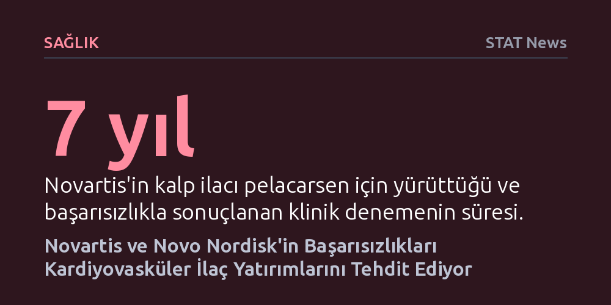

SAGLIK · STAT News · 2026-09-12
Novartis ve Novo Nordisk'in peş peşe gelen klinik deneme başarısızlıkları, yeni nesil kalp-damar ilaçlarına yönelik milyarlarca dolarlık yatırımları tehlikeye attı. Özellikle Lp(a) seviyelerini hedefleyen öncü ilaç pelacarsen'in yedi yıllık çalışmada sonuçsuz kalması, sektör genelinde derin bir güvensizlik yarattı.
Milyarlarca dolarlık umut vadeden Lp(a) hedefli yeni nesil kalp ilaçlarının klinik denemelerde çökmesi, kardiyovasküler biyoteknoloji yatırımlarının geleceğini kökten sarsıyor.

İlaç sektörünün devleri Novartis ve Novo Nordisk'in geliştirdiği yeni nesil kalp-damar ilaçlarının klinik denemelerde peş peşe başarısızlığa uğraması, tıp ve biyoteknoloji dünyasında geniş yankı uyandırdı. Özellikle Novartis'in yedi yıldır merakla beklenen kalp tedavisi pelacarsen'in klinik çalışmalarda beklenen etkiyi gösterememesi, sektörde büyük bir şok dalgası yarattı.
Novo Nordisk cephesinden gelen benzer olumsuz haberlerle birleşen bu tablo, son dönemde kardiyovasküler klinik araştırmalarda yaşanan canlanmaya sert bir fren yaptırdı. Sektör temsilcileri ve uzmanlar, yaşanan bu art arda başarısızlıkların alandaki beklenti balonunu söndüreceğini ve yatırımcılar üzerinde dondurucu bir etki bırakacağını belirtiyor.
Novartis tarafından geliştirilen pelacarsen, yüksek konsantrasyonlarda kalp krizi ve inme riskini katlayan bir lipit türü olan lipoprotein(a) ya da kısaca Lp(a) düzeylerini düşürmeyi hedefliyordu. Küresel ölçekte toplumun yaklaşık yüzde 20'sinin anormal derecede yüksek Lp(a) seviyelerine sahip olduğu tahmin ediliyor ve bu durum ilacı devasa bir kitle için potansiyel tedavi adayı yapıyordu.
Pelacarsen, bu özel mekanizmayı hedef alarak kardiyovasküler riskleri azaltmayı amaçlayan yeni sınıf tedavilerin ilk büyük denemesiydi. Yedi yıl boyunca sürdürülen kapsamlı çalışma, Lp(a) seviyelerini düşürmenin doğrudan kalp krizi ve felç oranlarını geriletip geriletmeyeceğini test eden en kritik kanıt alanı olarak görülüyordu.
Novartis'in aldığı bu olumsuz netice, yalnızca tek bir molekülün kaybıyla sınırlı kalmıyor; benzer biyolojik yolak üzerinde çalışan birçok biyoteknoloji şirketini de belirsizliğe itiyor. Pek çok büyük ilaç üreticisi, kendi Lp(a) ilaçlarını geliştirmek için araştırma ve geliştirme hatlarına şimdiden milyarlarca dolarlık kaynak tahsis etmiş durumdaydı.
Uzmanlara göre kardiyovasküler alandaki araştırma hevesi bu denemelerin çöküşüyle birlikte ciddi bir fonlama daralmasıyla karşı karşıya kalacak. Başarısızlıkların yarattığı güvensizlik ortamı, ilerleyen dönemde kardiyovasküler klinik çalışmalara sermaye çekilmesini belirgin biçimde zorlaştıracak gibi görünüyor.